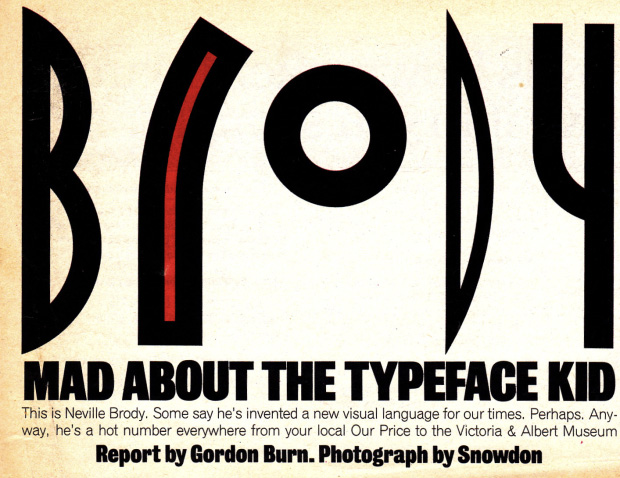
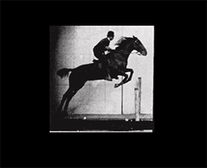

The Graphics Interchange Format (GIF; /ɡɪf/ GHIF or /dʒɪf/ JIF, see § Pronunciation) is a bitmap image format that was developed by a team at the online services provider CompuServe led by American computer scientist Steve Wilhite and released on June 15, 1987.[1]The Graphics Interchange Format (GIF; /ɡɪf/ GHIF or /dʒɪf/ JIF, see § Pronunciation) is a bitmap image format that was developed by a team at the online services provider CompuServe led by American computer scientist Steve Wilhite and released on June 15, 1987.[1]The Graphics Interchange Format (GIF; /ɡɪf/ GHIF or /dʒɪf/ JIF, see § Pronunciation) is a bitmap image format that was developed by a team at the online services provider CompuServe led by American computer scientist Steve Wilhite and released on June 15, 1987.[1]


Stephen Earl Wilhite (March 3, 1948 – March 14, 2022) was an American computer scientist who worked at CompuServe and was the engineering lead on the team that created the GIF image file format in 1987. GIF went on to become the de facto standard for 8-bit color images on the Internet until PNG (1996) became a widely supported alternative.[3] The format later became the subject of a patent assertion by Unisys on its use of the LZW compression algorithm.[3] Known as the inventor or creator of the GIF, Wilhite received a Webby Lifetime Achievement Award in 2013.[4]
Stephen Earl Wilhite[2] (March 3, 1948 – March 14, 2022) was an American computer scientist who worked at CompuServe and was the engineering lead on the team that created the GIF image file format in 1987. GIF went on to become the de facto standard for 8-bit color images on the Internet until PNG (1996) became a widely supported alternative.[3] The format later became the subject of a patent assertion by Unisys on its use of the LZW compression algorithm.[3] Known as the inventor or creator of the GIF, Wilhite received a Webby Lifetime Achievement Award in 2013.[4]
Stephen Earl Wilhite[2] (March 3, 1948 – March 14, 2022) was an American computer scientist who worked at CompuServe and was the engineering lead on the team that created the GIF image file format in 1987. GIF went on to become the de facto standard for 8-bit color images on the Internet until PNG (1996) became a widely supported alternative.[3] The format later became the subject of a patent assertion by Unisys on its use of the LZW compression algorithm.[3] Known as the inventor or creator of the GIF, Wilhite received a Webby Lifetime Achievement Award in 2013.[4]